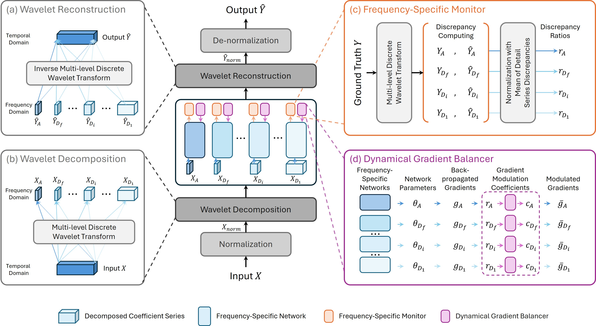
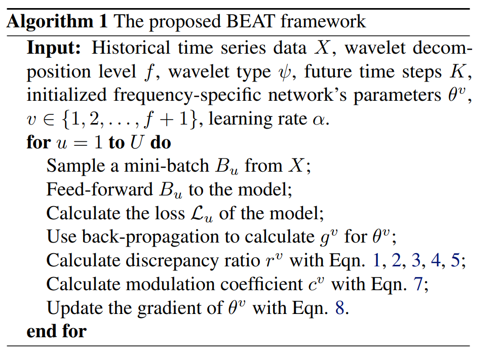

Abstract
Overview
Time-series forecasting is crucial for numerous real-world applications including weather prediction and financial market modeling. While temporal-domain methods remain prevalent, frequency-domain approaches can effectively capture multi-scale periodic patterns, reduce sequence dependencies, and naturally denoise signals. However, existing approaches typically train model components for all frequencies under a unified training objective, often leading to mismatched learning speeds: high-frequency components converge faster and risk overfitting, while low-frequency components underfit due to insufficient training time. To deal with this challenge, we propose BEAT (Balanced frEquency Adaptive Tuning), a novel framework that dynamically monitors the training status for each frequency and adaptively adjusts their gradient updates. By recognizing convergence, overfitting, or underfitting for each frequency, BEAT dynamically reallocates learning priorities, moderating gradients for rapid learners and increasing those for slower ones, alleviating the tension between competing objectives across frequencies and synchronizing the overall learning process. Extensive experiments on seven real-world datasets demonstrate that BEAT consistently outperforms state-of-the-art approaches.
01 · Figure
The Proposed BEAT Method

02 · Figure
Algorithm

Citation
BibTeX
@inproceedings{li2025beat,
title={{BEAT}: Balanced Frequency Adaptive Tuning for Long-Term Time-Series Forecasting},
author={Li, Zhixuan and Chen, Naipeng and Choi, Seonghwa and Lee, Sanghoon and Lin, Weisi},
booktitle={arXiv:2501.19065},
year={2025}
}